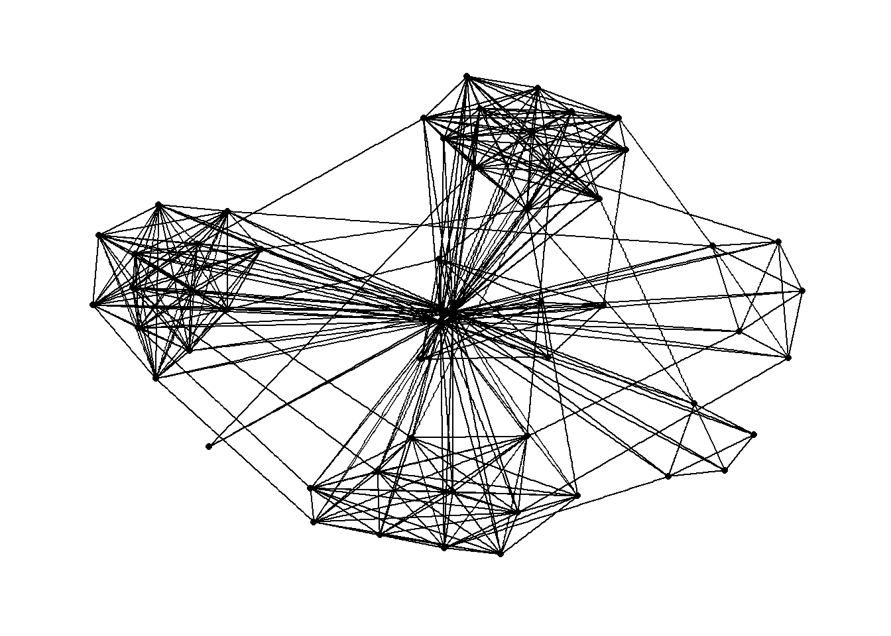
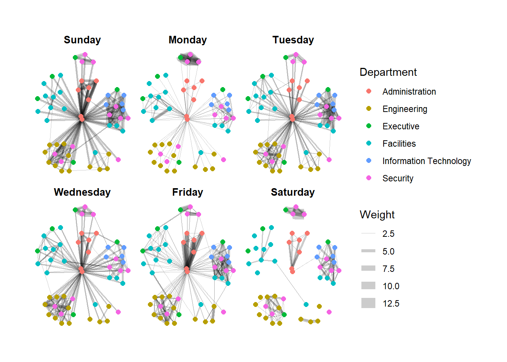

pacman::p_load(tidygraph, ggraph, visNetwork, lubridate, clock, tidyverse, graphlayouts)In-class_Ex04
1 Getting Started
1.1 Installing the packages
- clock is meant for time
- lubridate is meant for date columns
- graphlayout: complement ggraph
Note
- if we are using tidygraph, there’s no need for igraph.
1.2 Importing the Data
::: panel-tabset ## node
node <- read_csv("data/GAStech_email_node.csv")
str(node)spc_tbl_ [54 × 4] (S3: spec_tbl_df/tbl_df/tbl/data.frame)
$ id : num [1:54] 1 2 3 4 5 6 7 44 45 46 ...
$ label : chr [1:54] "Mat.Bramar" "Anda.Ribera" "Rachel.Pantanal" "Linda.Lagos" ...
$ Department: chr [1:54] "Administration" "Administration" "Administration" "Administration" ...
$ Title : chr [1:54] "Assistant to CEO" "Assistant to CFO" "Assistant to CIO" "Assistant to COO" ...
- attr(*, "spec")=
.. cols(
.. id = col_double(),
.. label = col_character(),
.. Department = col_character(),
.. Title = col_character()
.. )
- attr(*, "problems")=<externalptr> GAStech_email_nodes.csv consist of the name, department and title of the employees.
1.3 edge
edge <- read_csv("data/GAStech_email_edge-v2.csv")
str(edge)spc_tbl_ [9,063 × 8] (S3: spec_tbl_df/tbl_df/tbl/data.frame)
$ source : num [1:9063] 43 43 44 44 44 44 44 44 44 44 ...
$ target : num [1:9063] 41 40 51 52 53 45 44 46 48 49 ...
$ SentDate : chr [1:9063] "6/1/2014" "6/1/2014" "6/1/2014" "6/1/2014" ...
$ SentTime : 'hms' num [1:9063] 08:39:00 08:39:00 08:58:00 08:58:00 ...
..- attr(*, "units")= chr "secs"
$ Subject : chr [1:9063] "GT-SeismicProcessorPro Bug Report" "GT-SeismicProcessorPro Bug Report" "Inspection request for site" "Inspection request for site" ...
$ MainSubject: chr [1:9063] "Work related" "Work related" "Work related" "Work related" ...
$ sourceLabel: chr [1:9063] "Sven.Flecha" "Sven.Flecha" "Kanon.Herrero" "Kanon.Herrero" ...
$ targetLabel: chr [1:9063] "Isak.Baza" "Lucas.Alcazar" "Felix.Resumir" "Hideki.Cocinaro" ...
- attr(*, "spec")=
.. cols(
.. source = col_double(),
.. target = col_double(),
.. SentDate = col_character(),
.. SentTime = col_time(format = ""),
.. Subject = col_character(),
.. MainSubject = col_character(),
.. sourceLabel = col_character(),
.. targetLabel = col_character()
.. )
- attr(*, "problems")=<externalptr> 2 Data Wrangling
edge <- edge %>%
mutate(SendDate = dmy(SentDate)) %>%
mutate(Weekday = wday(SentDate,
label = TRUE, # label the date
abbr = FALSE )) # to spell out the day in full e.g. Monday instead of MON
str(edge)tibble [9,063 × 10] (S3: tbl_df/tbl/data.frame)
$ source : num [1:9063] 43 43 44 44 44 44 44 44 44 44 ...
$ target : num [1:9063] 41 40 51 52 53 45 44 46 48 49 ...
$ SentDate : chr [1:9063] "6/1/2014" "6/1/2014" "6/1/2014" "6/1/2014" ...
$ SentTime : 'hms' num [1:9063] 08:39:00 08:39:00 08:58:00 08:58:00 ...
..- attr(*, "units")= chr "secs"
$ Subject : chr [1:9063] "GT-SeismicProcessorPro Bug Report" "GT-SeismicProcessorPro Bug Report" "Inspection request for site" "Inspection request for site" ...
$ MainSubject: chr [1:9063] "Work related" "Work related" "Work related" "Work related" ...
$ sourceLabel: chr [1:9063] "Sven.Flecha" "Sven.Flecha" "Kanon.Herrero" "Kanon.Herrero" ...
$ targetLabel: chr [1:9063] "Isak.Baza" "Lucas.Alcazar" "Felix.Resumir" "Hideki.Cocinaro" ...
$ SendDate : Date[1:9063], format: "2014-01-06" "2014-01-06" ...
$ Weekday : Ord.factor w/ 7 levels "Sunday"<"Monday"<..: 6 6 6 6 6 6 6 6 6 6 ...
Observations
- Note that we now have two additional columns in the
edgedataframe:SentDateandWeekday. SentDateis a date datatype and it has a yyyy-mm-dd format.Weekdayis an ordinal data type with 7 levels (1 level for each day)
Now we will aggregate the edges because they are currently at an individual level. Each row is an edge currently.
edge_aggregated <- edge %>%
filter(MainSubject == "Work related") %>%
group_by(source, target, Weekday) %>%
summarise(Weight = n()) %>%
filter(source != target) %>%
filter(Weight > 1) %>%
ungroup()
glimpse(edge_aggregated)Rows: 1,372
Columns: 4
$ source <dbl> 1, 1, 1, 1, 1, 1, 1, 1, 1, 1, 1, 1, 1, 1, 1, 1, 1, 1, 1, 1, 1,…
$ target <dbl> 2, 2, 2, 2, 2, 3, 3, 3, 3, 3, 4, 4, 4, 4, 4, 5, 5, 5, 5, 5, 6,…
$ Weekday <ord> Sunday, Monday, Tuesday, Wednesday, Friday, Sunday, Monday, Tu…
$ Weight <int> 5, 2, 3, 4, 6, 5, 2, 3, 4, 6, 5, 2, 3, 4, 6, 5, 2, 3, 4, 6, 5,…
About the above code chunk
- First, we filter the edges by
MainSubjectso we get edges forWork-relatedemails. - We will aggregate the edges by summing the edges using their
source,targetandWeekday - We will also filter out edges where the sender sends emails to themselves and those edges with weight less than 1
graph <- tbl_graph(nodes = node,
edges = edge_aggregated,
directed = TRUE)
graph # A tbl_graph: 54 nodes and 1372 edges
#
# A directed multigraph with 1 component
#
# Node Data: 54 × 4 (active)
id label Department Title
<dbl> <chr> <chr> <chr>
1 1 Mat.Bramar Administration Assistant to CEO
2 2 Anda.Ribera Administration Assistant to CFO
3 3 Rachel.Pantanal Administration Assistant to CIO
4 4 Linda.Lagos Administration Assistant to COO
5 5 Ruscella.Mies.Haber Administration Assistant to Engineering Group Mana…
6 6 Carla.Forluniau Administration Assistant to IT Group Manager
7 7 Cornelia.Lais Administration Assistant to Security Group Manager
8 44 Kanon.Herrero Security Badging Office
9 45 Varja.Lagos Security Badging Office
10 46 Stenig.Fusil Security Building Control
# ℹ 44 more rows
#
# Edge Data: 1,372 × 4
from to Weekday Weight
<int> <int> <ord> <int>
1 1 2 Sunday 5
2 1 2 Monday 2
3 1 2 Tuesday 3
# ℹ 1,369 more rows
About the above code chunk
- From the documentation, we see that we need to indicate the dataframe for the nodes and the dataframe for the edges. - In addition, we should indicate if the output graph should be directed. For this exercise, a directed graph makes sense because there is a “direction” since we have a sender and recipient.
- We can review the output graph by generating the resultant network graph
graph.
3 Plotting a Network Graph
Now we can plot out the network graph using ggraph.
ggraph(graph) + #create layout
geom_edge_link() + # note that ggplot has geom_edge and geom_link! so we should use geom_edge_link and geom_node_point
geom_node_point()
Note
- Note that ggraph follows the convention of ggplot and tmap.
- For the
geom_edge_link()andgeom_node_point(), we can add aesthetics by defining parameters within them. (We will see them in Hands-on Exercise 8 and the following code chunk). - If we want to draw curved edges instead of straight edges, we need to use
geom_edge_arc
4 Adding Aesthetics to Network Graph
g <- ggraph(graph) +
geom_edge_link(aes(colour = 'grey50')) +
geom_node_point(aes(colour = 'grey40'))
g + theme_graph(background = 'grey10',
text_colour = 'white')
5 Changing the Network Graph’s Layout
g <- ggraph(graph,
layout = "fr") + #alternative is to use layout_with_fr() if we look at igraph's documentation
geom_edge_link(aes()) +
geom_node_point(aes())
g + theme_graph()
#trying out a different layout
g <- ggraph(graph,
layout = "kk") +
geom_edge_link(aes()) +
geom_node_point(aes())
g + theme_graph()
#trying out a different layout
g <- ggraph(graph,
layout = "dh") +
geom_edge_link(aes()) +
geom_node_point(aes())
g + theme_graph()6 Further Customising the Network Graph
g <- ggraph(graph,
layout = "nicely") +
geom_edge_link(aes()) +
geom_node_point(aes(color = Department,
size = 3))
g + theme_graph()
About the above code chunk
- Similar to ggplot, we add
aes()to add further aesthetics to the graph. - In the above example, we colour the nodes based on the employees’ department.
g <- ggraph(graph,
layout = "nicely") +
geom_edge_link(aes(width=Weight)) +
geom_node_point(aes(colour = Department),
size = 3)
g + theme_graph()It is very hard to read because the lines overlap.
g <- ggraph(graph,
layout = "nicely") +
geom_edge_link(aes(width=Weight),
alpha=0.2) +
geom_node_point(aes(colour = Department),
size = 3)
g + theme_graph()
Now the output is a bit better.
We can add scale_edge_width() to give the range of the “thickness” of the edges.
g <- ggraph(graph,
layout = "nicely") +
geom_edge_link(aes(width=Weight),
alpha=0.2) +
scale_edge_width(range = c(0.1, 5)) +
geom_node_point(aes(colour = Department),
size = 3)
g + theme_graph()7 Facetting Network Graphs
set_graph_style()
g <- ggraph(graph, layout = "nicely") +
geom_edge_link(aes(width=Weight),
alpha = 0.2) +
scale_edge_width(range = c(0.1, 5)) +
geom_node_point(aes(color = Department),
size = 2)
g + facet_edges(~Weekday)
8 Calculating Centrality
ggraph’s centrality measures all start with “centrality” so it is easy to locate them in the documentation and . In comparison, igraph’s centrality calculations’ synatax are less consistent.
Here is an example of calculating betweenness centrality:
g <- graph %>%
mutate(betweenness_centrality = centrality_betweenness()) %>%
ggraph(layout = "fr") +
geom_edge_link(aes(width=Weight),
alpha = 0.2) +
scale_edge_width(range = c(0.1, 5)) +
geom_node_point(aes(color = Department,
size = betweenness_centrality)) # to set the size of the nodes based on the centrality measure that we calculated
g + theme_graph() +
labs(title = 'The email relationship between employees based on betweenness centrality')
About the above code chunk
- We use
mutate()to create a new column for the betweenness centrality values calculated usingcentrality_betweenness(). - Then we use the betweenness centrality values to determine the size of the nodes. Those nodes with higher betweenness centrality, they will be bigger, and vice versa.
9 Creating Interactive Network Graph
Please refer to my hands-on Exercise 8! :)